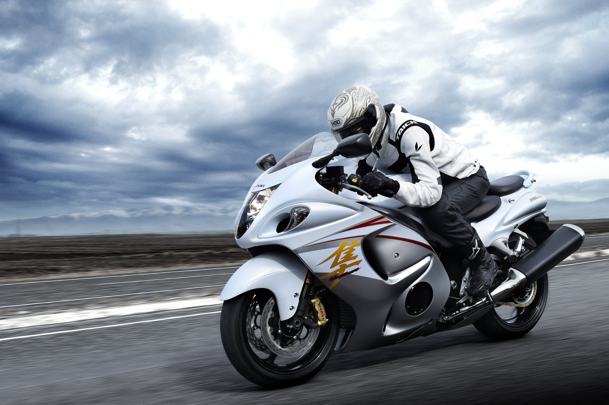
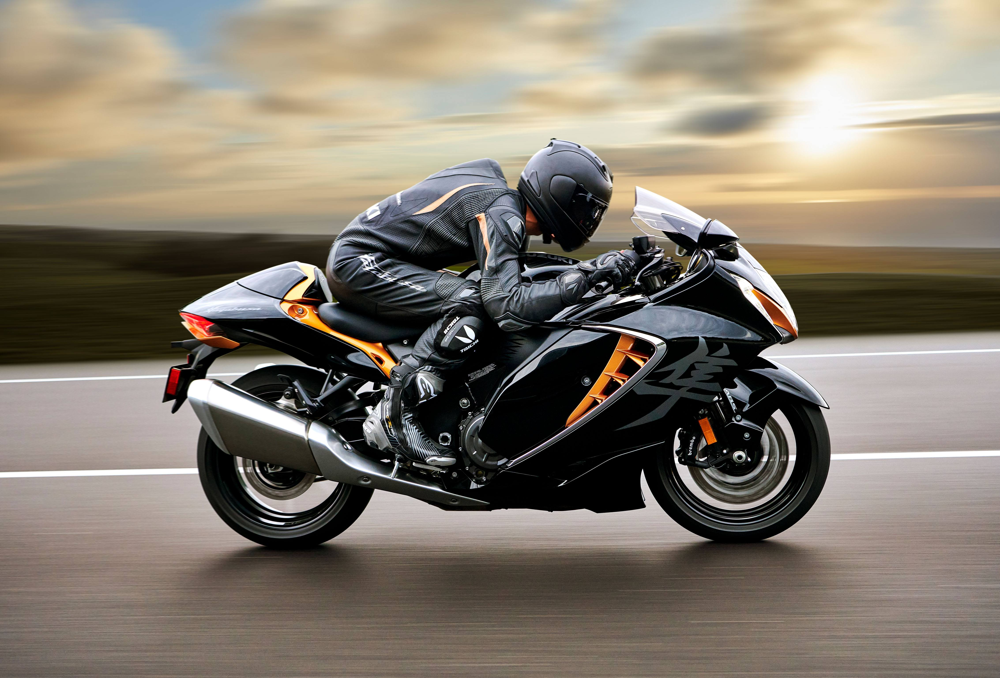
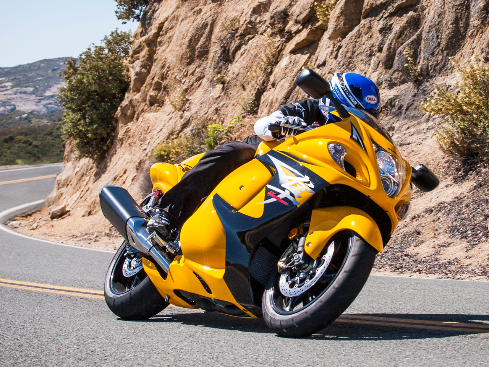
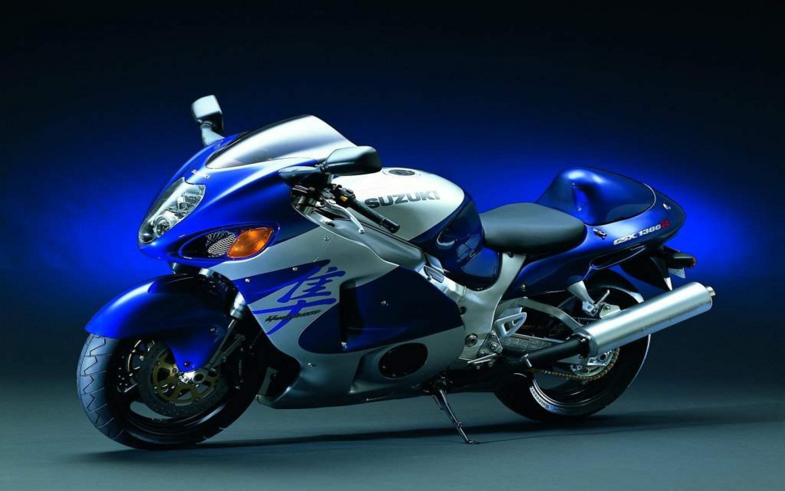
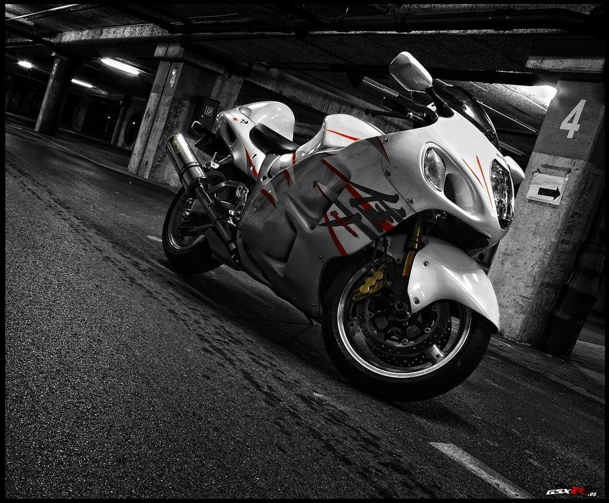
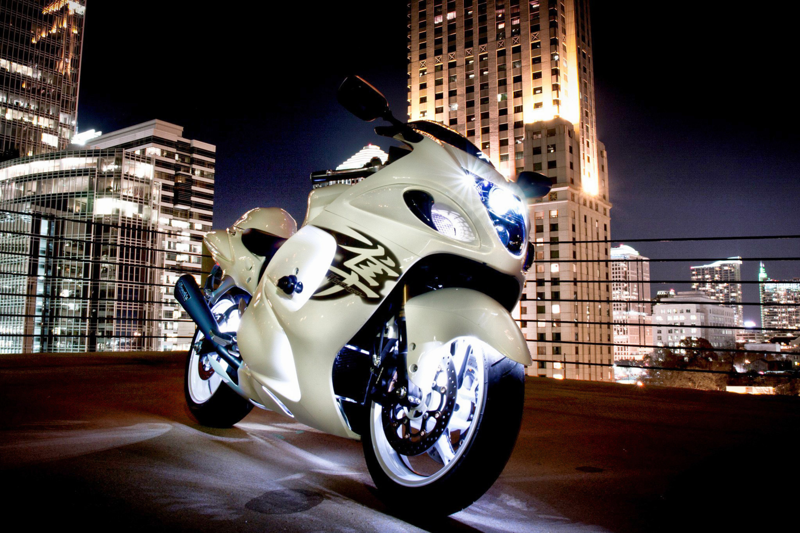
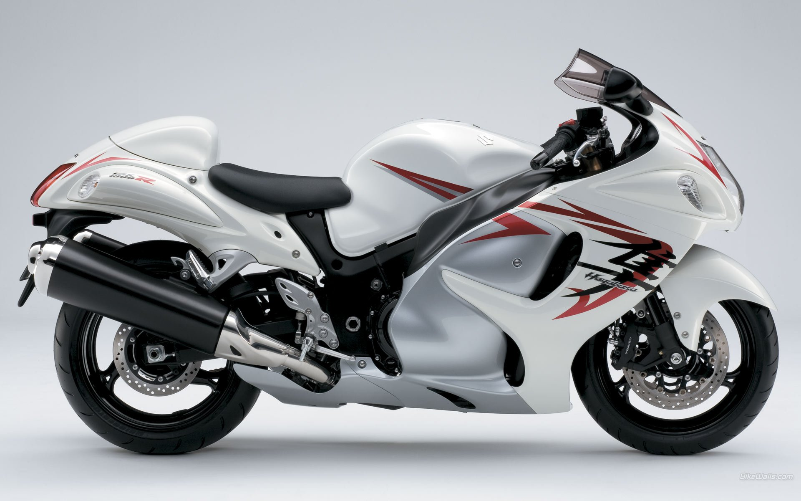

SUZUKI
SUZUKI
Also known as the GSX1300R, is a sports motorcycle that has been in production by Suzuki since 1999². It is renowned for its abundant power, agility, and majestic presence¹. The Hayabusa has been legendary for establishing new levels of performance and for retaining the number one position for the past two decades in the class it created¹.
The Hayabusa is powered by a 1340cc BS6 engine³. It has a 1299cc four-stroke, four-cylinder liquid-cooled engine⁴.
It immediately won acclaim as the world's fastest production motorcycle, with a top speed of 303 to 312 km/h (188 to 194 mph)².
The Hayabusa is known for its aerodynamic fairing design⁴.
It features a 6-speed constant-mesh sequential manual transmission⁴.
The Hayabusa comes with a collection of the latest electronic systems designed to optimize performance and make the bike more controllable and predictable¹.
As of now, the Hayabusa is available at a starting price of £17,449¹.
The Hayabusa is not just about speed, it has been lauded by many reviewers for its all-round performance, in that it does not drastically compromise other qualities like handling, comfort, reliability, noise, fuel economy, or price in pursuit of a single function². It's a motorcycle that's worthy of consideration for its speed and all its glory².